Our next step is to create our server. However, a server cannot live in isolation. It must be attached to a Virtual Network so internet access can be granted to the server.
Before we can create our server, we will need to create a Virtual Network.
Create a Virtual Network (VPC)
We will need to create a new Virtual Public Cloud, which is our virtual network.
From the AWS Web console navigate to the VPC homepage. The easiest way to do this is to use the search bar.
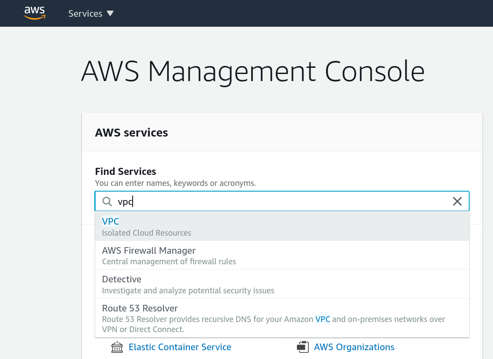
This will bring you to the VPC home page:
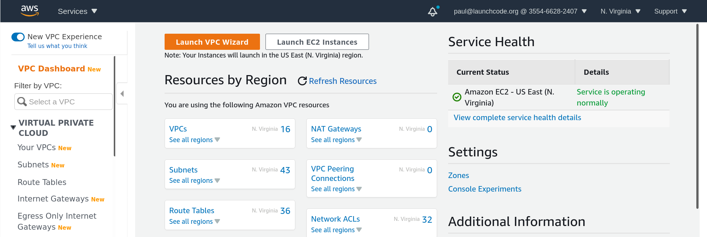
From here click the orange button Launch VPC Wizard at the top of the page. This takes you to the VPC Wizard, which is one of the fastest ways to create a new VPC. We will be selecting the default option which is VPC with a Single Public Subnet.
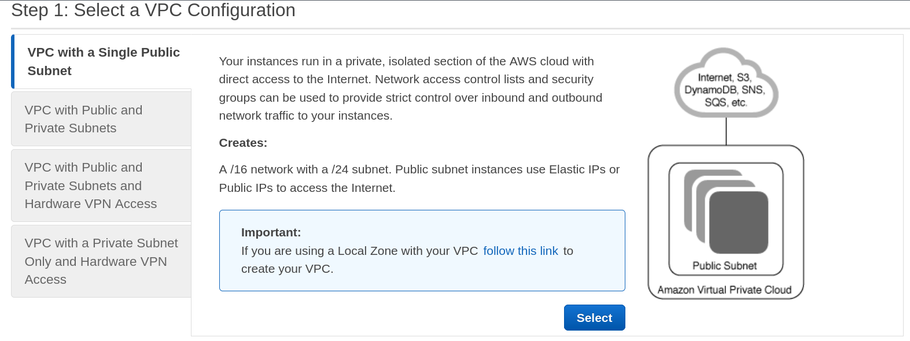
After selecting VPC with a Single Public Subnet click Select.
This takes us to the VPC creation screen, which we will mainly leave as defaults:
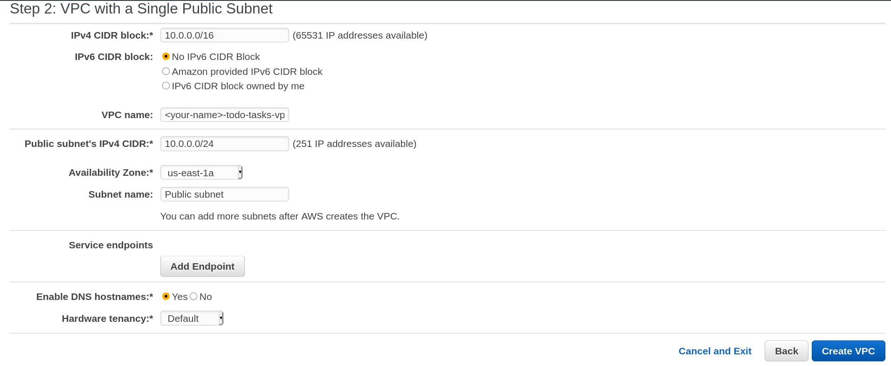
We need to set:
- VPC name:
<your-name>-todo-tasks-vpc
- Availability zone:
us-east-1a
After filling in this information we will click Create VPC. After a few seconds your new VPC will be ready for action. Save the VPC name for the next step.
Create a Virtual Machine (EC2)
Navigate to the EC2 page. From the menu at the top of your screen click Services and select EC2 or use the search bar. This will take you to the EC2 home page:
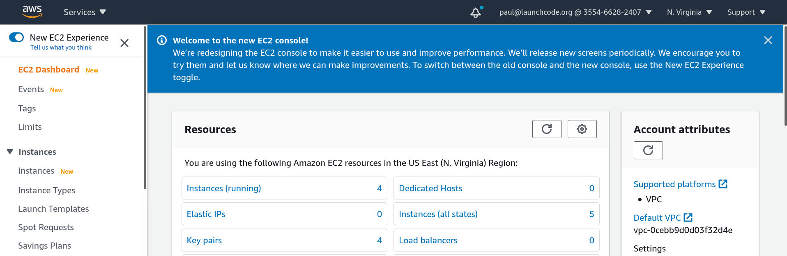
We want to create a new EC2 instance so click the Instances option on the left hand menu:
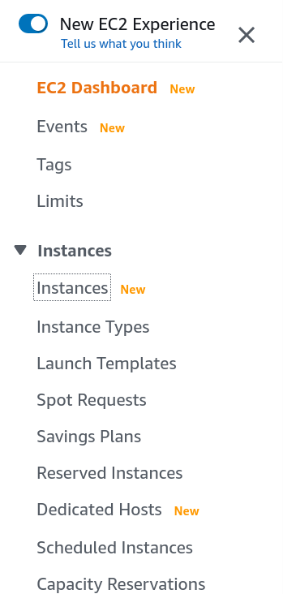
This will show you the list of all the instances in the us-east-1 region that are associated with this account.
note
All of our accounts are under the LaunchCode Devops account so you will be able to see all of the instances created by the instructors and your fellow students. We thank you for not touching any instances that are not yours.
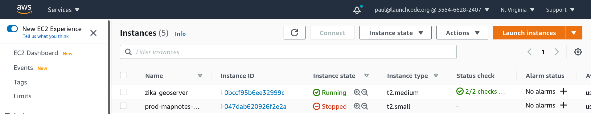
From the screen with all the instances click the orange Launch instances button in the top right hand corner of the screen.
This takes you to a wizard with lots of options for configuring this EC2 instance:
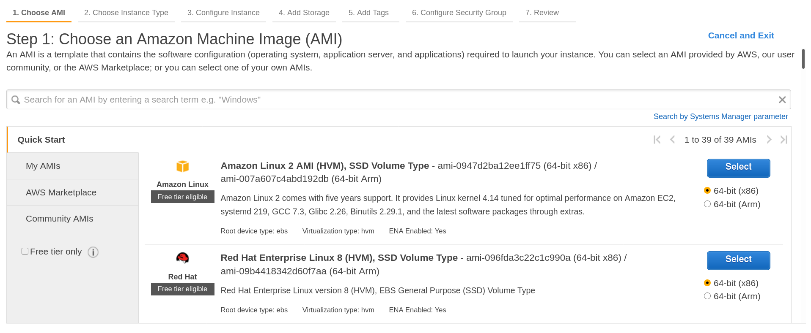
For now we will be using the AWS provided Ubuntu 18.04 image. Search for ubuntu in the search bar to bring it up:
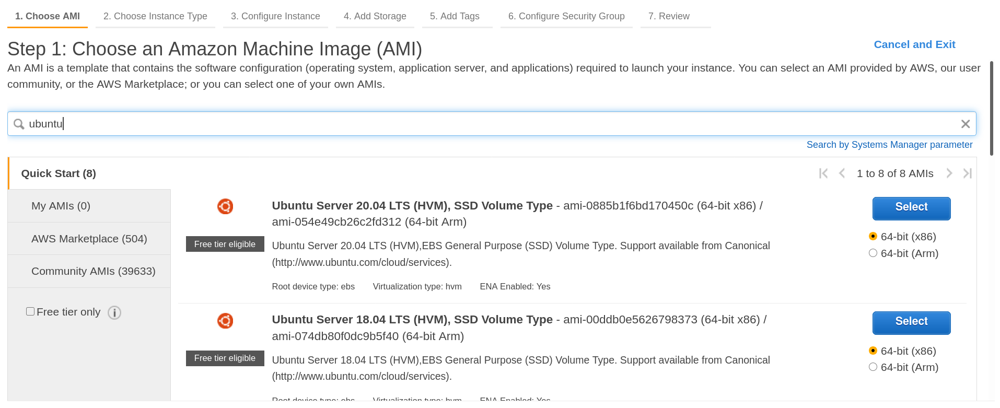
Select the option that matches Ubuntu Server 18.04 LTS (HVM), SSD Volume Type make sure it is the free tier eligible image.
After selecting the image you will be taken to the second screen of the EC2 wizard:
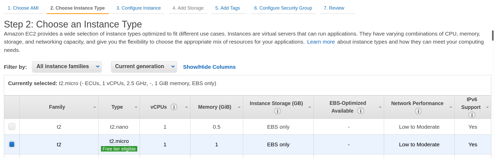
We will be selecting the default EC2 type: t2.micro this should be a powerful enough machine to run our API and database. Take note that this is where the CPU and RAM is configured. Click Next Configure Instance Details.
This third section of the wizard is where we will set the most aspects of our VM.
We will leave everything default with the exception of:
- Network:
<your-name>-todo-tasks-vpc
- Subnet:
Public subnet
- Auto-assign Public IP:
enable
- IAM Role:
EC2_to_S3_readonly
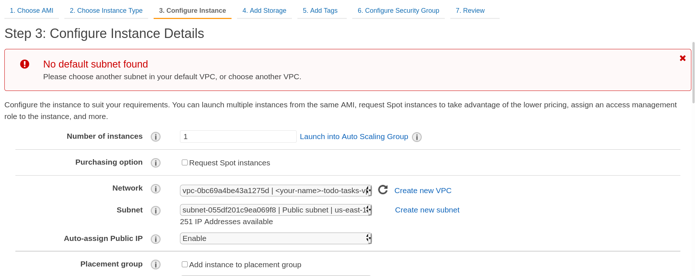
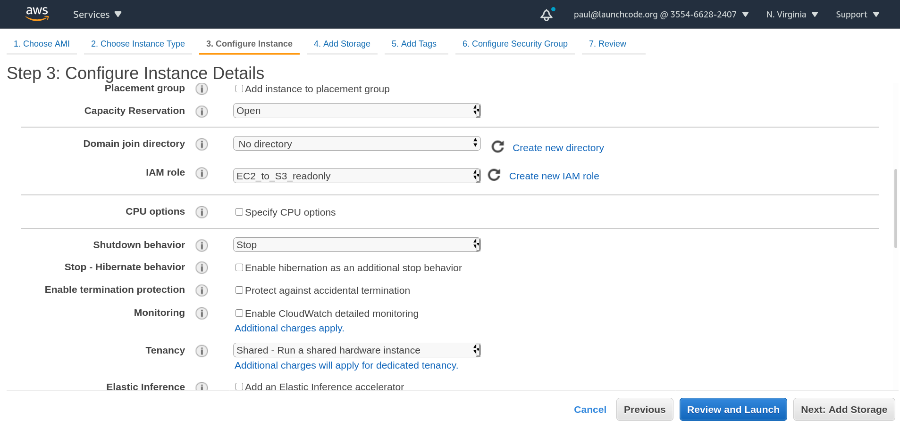
After filling out the necessary information navigate to the 5th wizard screen Add Tags:
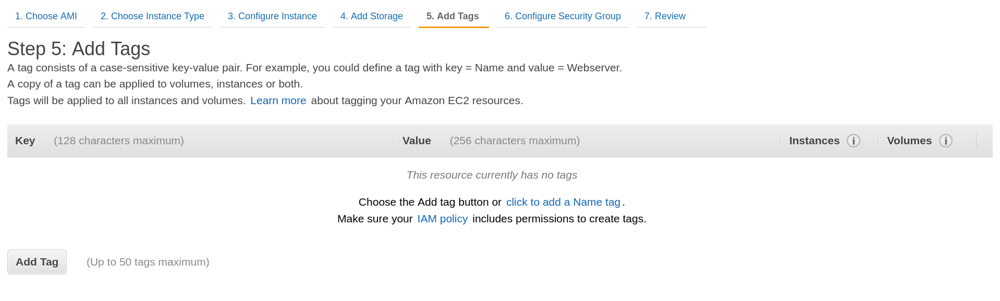
Click the Add Tag button and add a Key Value pair matching:
- Key:
<your-name>-todo-tasks-ec2
- Value:
<your-name> Todo Tasks API EC2
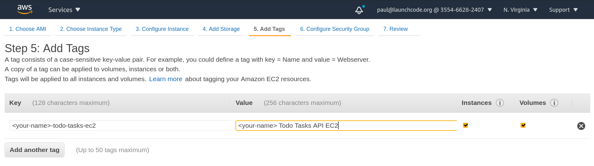
After adding this new tag, move to the next section Configure Security Group.
Name the security group, make sure port 22 is only open to your IP address, and open up port 80 to anywhere. Look at the following picture for guidance:
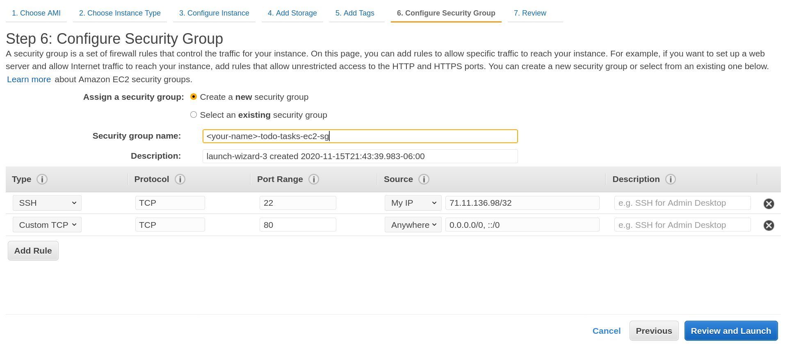
Finally click Review and Launch. This will take you to the review screen. Take a second to make sure you filled everything out properly and then click Launch.
Before your EC2 will launch you will need to create an SSH key pair if you haven’t already. If you have already created a key associated with your AWS account simply use that one. If not follow the on screen prompt to create one and move it to your ~/.ssh/ directory.
Finally after reviewing, and choosing a valid key pair click Launch it will provision your EC2 instance.
Click the View Instance button to be taken to the EC2 instances home page. From here search for the tag you created earlier and your EC2 should pop up.
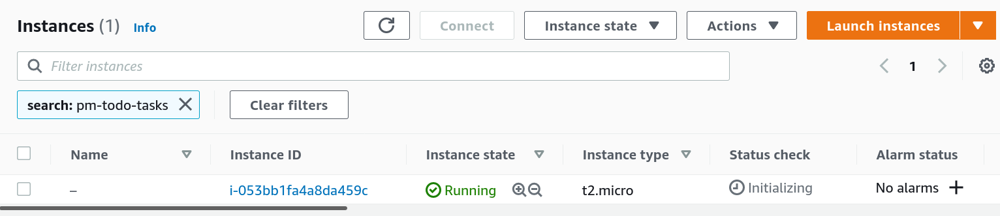
Click the instance ID hyperlink to be taken to your EC2’s homepage.
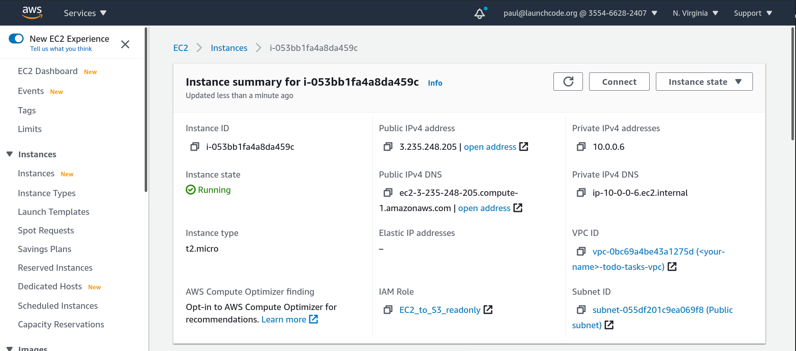
Take note of the public IPv4 address as we will be using it to gain access to our EC2.